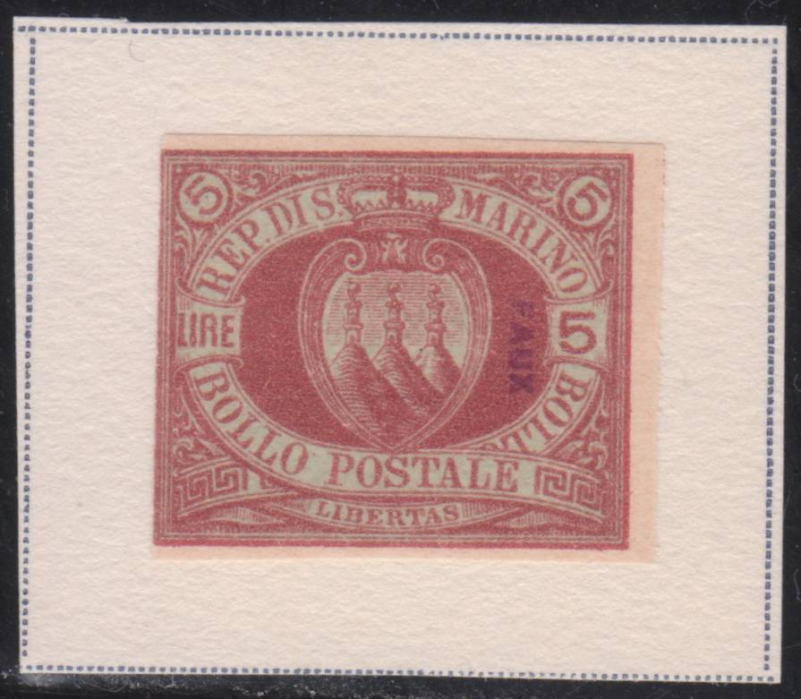
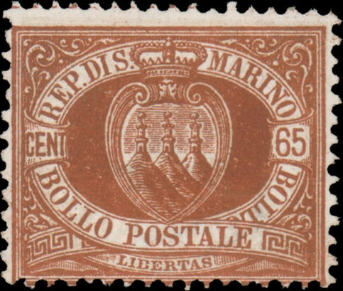
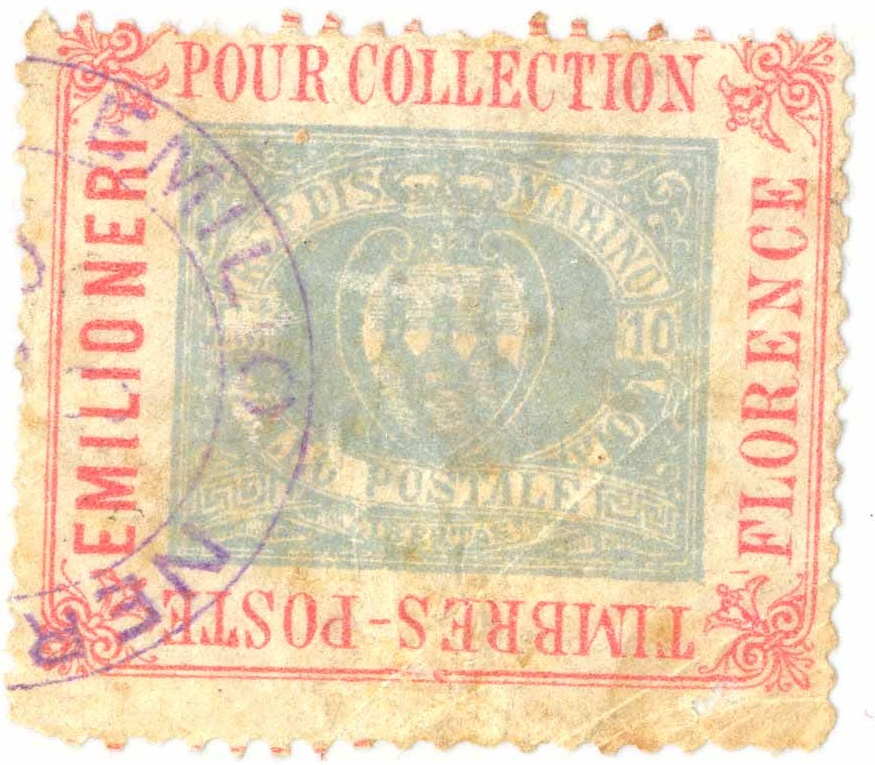

Presumably genuine stamps.
Return To Catalogue - San Marino 1877-1917 - San Marino 1918 onwards and miscellaneous - Italy
Note: on my website many of the
pictures can not be seen! They are of course present in the
catalogue;
contact me if you want to purchase the catalogue.
Presumably genuine stamps.
Forgeries, example:
In the above 40 c forgery, the perforation is wrong (these stamps should be perforated 14).
Other forgeries (including overprints) can be found in 'The Fournier album of philatelic forgeries'. These forgeries have the period after "DIS." significantly larger than the period after 'REP.'. The background below the labels in the right and left corners has some shading in it in the genuine stamps, this shading is almost completely missing in Fournier's forgeries. Fournier's forgeries are also unwatermarked. I've seen Fournier forgeries of the values 10 c red, 20 c red, 20 c lilac, 25 c blue, 30 c brown and 1 L blue.


Some Fournier forgeries as they can be found in 'The Fournier
Album of Philatelic Forgeries' (images obtained thanks to Richie
H. Smallwood)

Fournier forgery from a Fournier Album with 'FAUX' overprint.

Some pages from a Fournier Album.
Fournier forged cancels as obtained from a 'Fournier Album of
Philatelic Forgeries' (reduced sizes)
The forger Sperati has made a forgery of the 65 c value (not listed in the BPA work on Sperati forgeries).

65 c Sperati forgery

Advertisement label from stamp dealer Emilio Neri with in the
center an image of a San Marino stamp. I have seen similar labels
with a 5 c 1860 Tuscany stamp image printed inside with the
borders cut off pretending to be a genuine stamp.


{kind=link}
{kind=link}
{kind=link}
{kind=link}